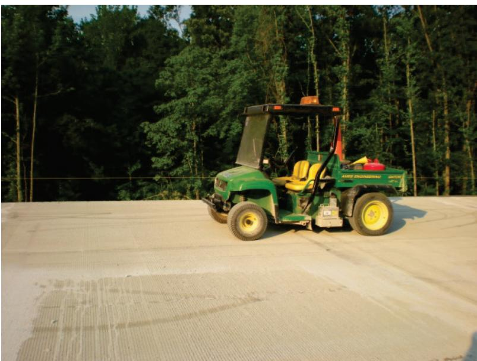
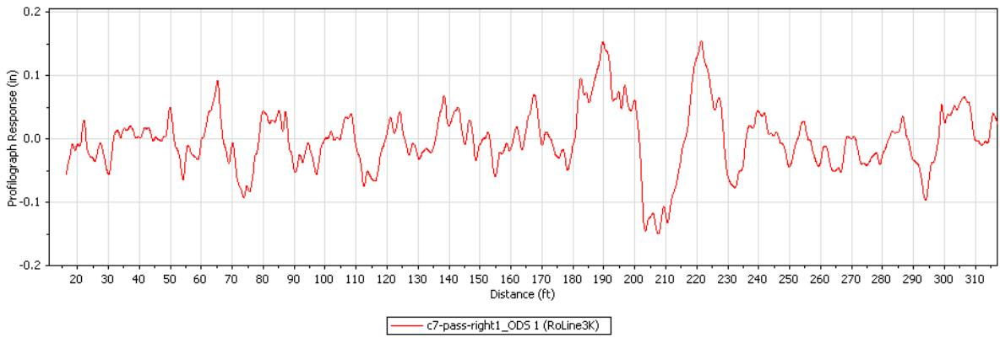

Profilograph
The Profilograph is a construction‑stage quality‑control instrument employed to evaluate the longitudinal surface smoothness (or roughness) of newly placed concrete pavements such as runways, taxiways and other airfield surfaces [1][2]. It operates by rolling a straight‑edge wheel—traditionally a 12‑foot California‑type device conforming to ASTM E1274—or a lightweight inertial profiler equipped with line lasers, while a central sensing wheel or laser system records vertical deviations that are later filtered and scaled to produce a Profile Index expressed in inches per mile (or converted to an International Roughness Index) [1][3][4][5]. Measurements are taken as soon as the slab can support foot traffic but no later than forty‑eight hours after placement, providing an early quantitative metric of ride quality and long‑term durability that can be used in real time to guide corrective actions before the pavement cures [2][3].
Sources (5)
Purpose and quality objectives
The Profilograph is employed as a quality‑control instrument to evaluate the longitudinal surface smoothness (or roughness) of newly placed concrete pavement, including runways, taxiways, and other airfield surfaces [1][2]. It operates by rolling a straight‑edge wheel—traditionally a 12‑foot span California‑type device conforming to ASTM E1274—along the pavement while a sensing wheel records vertical deviations that are later processed into a smoothness index [1][2]. The recorded trace is reduced to a Profile Index, expressed in inches per mile, or converted to an International Roughness Index (IRI), which serves as the quantitative performance metric for ride quality and long‑term durability [1][2]. Measurements are taken after the concrete can support foot traffic but no later than 48 hours after placement, with many guides recommending that initial‑smoothness readings be obtained within the first 24 to 48 hours [2][3]. The index is calculated by counting all profile excursions that exceed a predefined blanking band within each segment and dividing the total count by the length of those segments, thereby directly controlling the smoothness characteristic of the inspected material [1]. Acceptance criteria are defined in terms of the Profile Index: values below 1.0 in/mi meet full contract payment requirements, while any value under 15 in/mi is required for surface acceptance; segments exceeding these limits are identified as “must‑grind” zones that must be ground or replaced before final acceptance [2]. Modern implementations replace the traditional wheel with a lightweight inertial profiler equipped with line lasers, providing an objective smoothness metric that can be recorded in real time and used to adjust construction practices immediately [3][1]. Real‑time versions mounted on the paver give operators immediate feedback so corrective actions can be taken before the pavement cures, enhancing workmanship quality [3].
The following figure illustrates the various devices used to measure pavement smoothness.
 Comparison of straightedge, lightweight non-contact profiler, and California Profilograph on a concrete pavement. [2]
Comparison of straightedge, lightweight non-contact profiler, and California Profilograph on a concrete pavement. [2]
The image displays three distinct apparatuses used for evaluating the longitudinal surface smoothness of newly placed concrete pavements: a metal straightedge frame with an operator, a lightweight non-contact profiler mounted on a wheeled cart, and a long California Profilograph extending into the distance.
The Profilograph, whether a California‑type instrument or a comparable lightweight or high‑speed inertial profiler, is used to evaluate the smoothness of a hardened concrete pavement surface by recording profile variations as the finished slab passes over it [4][5]. By processing those measurements through a mechanical filter, the device produces a Profile Index that quantifies longitudinal surface roughness in terms of vertical deviation per unit distance traveled, thereby reflecting how closely the pavement conforms to design smoothness criteria and indicating the workmanship‑related ride‑quality performance characteristic [5][4].
[1] — Ch. 3 (pp. 55–56), Ch. 8 (pp. 245–247), Ch. 9 (p. 288), Ch. 10 (pp. 316–326); [2] — Ch. 2 (pp. 70–73), Ch. 3 (pp. 132–137), Ch. 4 (pp. 144–145), Ch. 5 (pp. 281–286), App. A (pp. 372–373), App. I (pp. 515–531); [3] — Ch. 4 (pp. 81–82); [4] — 2. Factors Influencing Long-Li… (p. 36); [5] — Ch. 3 (p. 56)
The Profilograph is employed as a construction‑stage quality‑control instrument to verify that newly placed concrete pavement satisfies prescribed smoothness criteria that are directly linked to ride quality, driver comfort, long‑term durability, and—in the case of airfield pavements—aircraft safety. By rolling a straight‑edge equipped with a central sensing wheel (or lightweight inertial profiler) over the fresh surface, the device records vertical deviations—bumps and dips—and generates an electronic longitudinal profile from which a quantitative smoothness index such as the Profile Index or International Roughness Index can be derived. The resulting smoothness qualifying factor is obtained by summing count values that exceed the prescribed blanking band for each measured segment, dividing this total by the cumulative segment length, and then comparing the value against agency‑specified thresholds expressed either as a Profile Index limit or an IRI limit of typically one inch per mile for new or reconstructed sections longer than 500 ft, although ASTM E1274 permits up to fifteen inches per mile. The guides require that measurements be taken as soon as the concrete can support foot traffic but no later than 48 hours after placement, with some specifications calling for three calibrated passes and scaling of unequal‑length traces according to ASTM E1274 before averaging the Profile Indexes. The equipment must possess electronic recording and automated data processing capabilities, be calibrated, and be operated by qualified personnel; measurement locations must avoid design grade breaks, points of vertical intersection, or utility interfaces. Exceeding the allowable roughness—whether manifested as bumps that surpass bump‑height limits or as overall Profile Index values above the threshold—identifies “must‑grind” areas that trigger corrective diamond grinding limited to ten percent of any sublot and a maximum depth of one‑quarter inch, or alternatively prompt additional compaction or localized grinding before the pavement enters service. Early detection of excessive roughness also helps address construction variables such as non‑uniform mix composition, improper equipment tuning, moisture‑induced warping, or temperature‑driven curling that can otherwise generate large IRI variations and lead to costly post‑construction remediation. By satisfying the smoothness requirement within the stipulated time frame, the Profilograph supports compliance with contractual acceptance criteria, avoids payment penalties, and contributes to extended pavement life and acceptable ride quality.
The Profilograph is used to verify the smoothness of a hardened concrete pavement surface, ensuring that ride quality satisfies long‑life performance criteria and that surface irregularities which could cause premature distress or reduced driver comfort are identified [4]. By directly recording the longitudinal profile and computing a Profile Index (PI) with a California‑type profilograph, the instrument provides a metric that reliably reflects the roadway roughness perceived by users, addressing the inadequacy of response‑type systems which do not capture or properly weight the critical wavelength components [5]. The test is incorporated into a broader suite of smoothness inspections that may also employ lightweight profilers, high‑speed inertial profilers, or straightedge checks, reinforcing its role in comprehensive surface quality assessment [4]. To prevent inaccurate profile data that could compromise subsequent grinding and grooving work, the guides require that the profilograph conform to contractual specifications, be calibrated according to the manufacturer’s recommendations, and be operated only by personnel who meet the stipulated training or certification requirements [5].
[1] — Ch. 3 (pp. 55–56), Ch. 8 (pp. 245–247), Ch. 9 (p. 288), Ch. 10 (pp. 316–326); [2] — Ch. 2 (pp. 70–73), Ch. 3 (pp. 132–135), Ch. 4 (pp. 144–145), Ch. 5 (pp. 281–286), App. A (pp. 372–373), App. I (pp. 515–531); [3] — Ch. 4 (pp. 81–82); [4] — 2. Factors Influencing Long-Li… (p. 36); [5] — Ch. 3 (p. 56), Ch. 9 (p. 189)
Scope and applicability
The Profilograph is employed on concrete pavements to record the surface profile that underlies ride‑quality indices such as the IRI and therefore serves construction quality‑control activities where a smoothness check is required [1][2]. It is applicable wherever fresh concrete slabs are being placed, provided the material has cured enough for foot traffic but no later than forty‑eight hours after placement, which captures the intended finish before curling can develop [2][3]. The device is used on new or reconstructed airfield pavements—specifically runways and taxiways constructed by slip‑form methods—and on any concrete paving lane longer than two hundred feet; shorter lanes are excluded from Profilograph testing [2]. For projects that consist of consecutive paving lots, the final thirty feet of one lot are counted as part of the next day’s lot when longitudinal smoothness is evaluated, and the equipment must be positioned sufficiently far from grade breaks, drainage structures, utility interfaces or other penetrations to avoid influencing the measurement [2]. The Profilograph may also be applied on any concrete pavement where the contract references UFGS 32 13 14.13 for longitudinal surface‑smoothness pay‑factor criteria, and it is accepted as an alternative to straightedge or rolling inclinometer testing under FAA Item P‑501 [2]. Acceptance based on Profilograph results is required for projects longer than five hundred feet (approximately 152 m); for smaller maintenance or repair jobs the traditional twelve‑foot straightedge tolerances are used instead [2]. Measured values are expressed as a Profile Index in accordance with ASTM E1274, and the longitudinal roughness limit must be less than fifteen inches per mile; any “must‑grind” bumps identified must be corrected before payment is released [2]. Because ride quality is considered a key indicator of functional performance and is affected by both initial construction and later distress, the Profilograph’s ability to capture the early surface condition makes it relevant throughout the pavement’s service life [1]. The instrument itself is a lightweight inertial profiler equipped with line lasers that provides real‑time smoothness data within the first twenty‑four to forty‑eight hours after paving, supporting rapid QC adjustments when specifications are not met [3].
The following figure illustrates the straightedge standard dimensions and other requirements relevant to these testing protocols.
 Straightedge standard dimensions and other requirements. [2]
Straightedge standard dimensions and other requirements. [2]
The figure displays a straight measuring tool constructed from extruded aluminum with a machined edge bonded to the bar for flatness tolerance.
The California Profilograph is used to assess the smoothness of a hardened pavement surface—specifically long‑life concrete pavements—by profiling the finished slab after it has set. It is listed alongside lightweight and high‑speed inertial profilers or a straightedge as an acceptable tool for this surface‑smoothness test. [1][2][3][4]
The following figure illustrates a lightweight inertial profiler used for smoothness testing.

Lightweight Inertial Profiler for Smoothness Testing [4]The image displays a green utility vehicle equipped with an inertial profiler attachment, parked on a newly finished concrete surface. This apparatus is used to evaluate the longitudinal smoothness of hardened pavement surfaces as part of construction quality control.
[1] — Ch. 3 (pp. 55–56); [2] — Ch. 2 (pp. 70–73), Ch. 3 (pp. 132–135), Ch. 5 (pp. 281–286), App. I (pp. 515–531); [3] — Ch. 4 (pp. 81–82); [4] — 2. Factors Influencing Long-Li… (p. 36)
According to the Department of Defense UFGS 32‑13‑14.13 a California Profilograph that complies with ASTM E1274 and records electronically is mandatory for measuring longitudinal smoothness and calculating the Profile Index on any concrete airfield lane that exceeds 200 ft in length. The same requirement is echoed by the FAA, which recommends that new or reconstructed runways and taxiways longer than 500 ft (152 m) be accepted on the basis of Profilograph results; for such projects the equipment, operator qualifications, calibration procedures and result interpretation must follow paragraph 501‑6.6b(4). When a project specification explicitly calls for Profilograph testing, it is required for each paving lot, although the final 30 ft of a day’s lot is excluded from pay‑adjustment calculations and is instead counted toward the subsequent lot.
Where the specifications do not mandate its use, the FAA item P‑501 permits the Profilograph as an optional alternative to straightedge or rolling‑inclinometer methods, most often employed on high‑speed taxiways and runways. The option may also be exercised for small maintenance or repair jobs whose total volume is under 2 000 cubic yards; in those cases acceptance and payment are governed by other sections (e.g., 501‑8.1) and the Profilograph can be omitted. Non‑contact laser profilers that simulate a California Profilograph are allowed only after approval by the Regional Project Representative, because UFGS 32‑13‑14.13 does not currently authorize such devices.
The method is inappropriate wherever the instrument cannot reach the surface or where the pavement geometry precludes a continuous longitudinal trace. This includes any lane shorter than 200 ft, sections that contain grade breaks, drainage structures, utility penetrations, design‑grade breaks, points of vertical intersection, or other similar features; in those areas straightedge tolerances replace Profilograph measurements. Additionally, smoothness testing must be performed while the concrete is still hard enough to walk on and no later than 48 hours after placement, since later measurements become unreliable due to curling or warping. [2]
The following figure illustrates the proper technique for measuring pavement surface deviations from a straightedge.
 Proper technique for measuring pavement surface deviations from straightedge. [2]
Proper technique for measuring pavement surface deviations from straightedge. [2]
The figure illustrates the correct method for assessing longitudinal smoothness by placing a rigid straightedge on the pavement surface and supported only by its own weight. It shows that the device rests upon two high points, creating an overhang at the ends where the largest deviation occurs between the straightedge and the pavement surface.
[2] — Ch. 2 (pp. 70–73), Ch. 3 (pp. 132–134), Ch. 5 (pp. 281–286), App. I (pp. 515–531)
Test methods and procedures
Profilograph testing follows the requirements set out in UFGS 32‑13‑14.13, which specifies that a California Profilograph conforming to ASTM E1274 be used to capture longitudinal pavement smoothness and compute a Profile Index. The instrument must provide electronic recording and automated data processing capabilities. For FAA‑specified work this method may serve as an alternative to straightedge or rolling inclinometer testing, but any non‑contact laser system intended to simulate the California Profilograph trace must receive approval from the RPR.
The test is performed on pavement segments that are at least 0.1 mile (528 ft) long. Three passes are taken across each lane: one positioned a quarter of the lane width from each edge (equivalent to 1/8 in from the edge) and a third along the centerline. The Profilograph records raw trace data, which may have unequal lengths; these traces are scaled and proportioned according to the procedure outlined in ASTM E1274 before a profile index is calculated for each pass. The lane’s final profile index is obtained by averaging the three individual indexes. This resulting index is then compared with the payment tables—values below 1 in/mi receive full payment, while any excess beyond tolerance triggers grinding or removal as specified. [2]
The following figure illustrates a profile trace produced by a non-contact laser profiler.

Profilograph response trace showing vertical deviations over distance. [2]The figure displays a red line graph plotting Profilograph Response in inches against Distance in feet, representing the longitudinal surface profile of a pavement. This trace is an example of the raw data analyzed to determine compliance with smoothness specifications and guide corrective actions such as diamond grinding or panel replacement.
[2] — Ch. 5 (pp. 281–286), App. I (pp. 527–531)
Valid Profilograph results require that the instrument be incorporated into an equipment‑management program that provides for regular calibration and maintenance, and that the unit itself be a California Profilograph conforming to ASTM E1274 with electronic recording and automated processing. Calibration must be performed in accordance with the manufacturer’s recommended procedures as well as any calibration criteria set out in the project contract specifications. The guides differ on operator qualifications; one source notes that no specific certification or training is prescribed for the operator, whereas another requires the operator to satisfy whatever training or certification is stipulated in the contract documents. No explicit environmental controls such as temperature or humidity limits are imposed by the sources, so valid results can be obtained without additional environmental restrictions. [2][5]
[2] — Ch. 5 (pp. 281–286), App. I (pp. 527–531); [5] — Ch. 9 (p. 189)
Sampling and testing frequency
The Profilograph sampling plan is activated for any newly constructed or reconstructed runway or taxiway that exceeds 500 ft in length, and it is applied only to longitudinal pavement segments that are at least 0.1 mile (528 ft) long, while any lane shorter than 200 ft is excluded from testing [2]. For each qualifying segment the instrument records three parallel traces – one along the centerline and two positioned a distance of one‑eighth of the lane width from each edge – and these continuous profiles are later scaled to ASTM E1274 and averaged to produce a profile index [2]. The location and quantity of measurements are therefore determined by running the profiler continuously over the entire length of the slab, rather than selecting discrete points, which provides a full‑length smoothness record within the first 24 to 48 hours after placement [3]. Acceptance testing is organized on a lot basis, where a “lot” represents the concrete placed during a single day and is limited to 2 000 cubic yards; when project specifications require smoothness, a Profilograph run is performed for every such lot, otherwise only straight‑edge tolerances are applied [2]. The final 30 ft of pavement laid on a given day are not retained for that day’s acceptance but are carried forward and counted as part of the subsequent lot’s profiling, ensuring continuity between successive lots [2]. Equipment must be positioned sufficiently far from excluded features such as grade breaks or drainage structures so that those elements do not influence the measured profile, and any irregularities identified in the early‑age data trigger corrective actions prescribed by the quality‑control plan [2][3].
[2] — App. I (pp. 515–531); [3] — Ch. 4 (pp. 81–82)
To obtain a representative profilograph smoothness measurement the contractor treats each production shift as a lot that does not exceed about 1,000 cubic yards and subdivides it into four roughly equal sub‑lots. A profilograph reading is taken from each sub‑lot after the concrete has hardened enough to support foot traffic but no later than forty‑eight hours after placement, thereby capturing the material, the placing process and the finished surface for the entire lot. Each reading must be made on a continuous pavement segment at least 0.1 mile (528 ft) long; three parallel traces are run – one along the centreline and two positioned a‑eighth of the lane width from each edge – and any traces of unequal length are scaled in accordance with ASTM E1274 before they are averaged to produce the profile index. The last 30 ft of pavement placed on a given day is counted toward the smoothness assessment of the following day’s lot, while sections that cross grade breaks, drainage structures or other penetrations are omitted from testing, and any lane shorter than 200 ft is excluded entirely. [2]
[2] — Ch. 2 (pp. 70–73), App. I (pp. 527–531)
Acceptance criteria and tolerances
Profilograph smoothness is evaluated by measuring a profile index in inches per mile over lane segments that are at least 0.1 mile (528 ft) long. Three calibrated traces are run—one along the centerline and one each 1/8 ft from the left‑ and right‑hand edges—and the individual profile indexes are scaled according to ASTM E1274 and then averaged. The averaged index is compared with the acceptance criteria in Table I.4. An average below 1.0 in/mi qualifies the work for full (100 %) payment, while higher values invoke the reduced‑payment percentages shown in that table. Moreover, the California profilograph standard caps acceptable smoothness at 15 in/mi; any segment whose averaged profile index exceeds this upper limit is considered unacceptable and must be ground or removed. [2]
[2] — App. I (pp. 516–531)
The Profilograph evaluation begins by scaling any raw trace data according to ASTM E1274, after which a profile index is computed for each of the three passes made across a lane. The lane’s overall smoothness result is the arithmetic average of those three indices and this averaged value is then compared with the tolerance bands set out in Table I.4 (or Section 2.1.1). If an individual pass produces a profile index that exceeds the prescribed smoothness limit, it is rejected and a “must‑grind” bump must be corrected before the segment can be accepted. The averaged index determines a percentage payment factor; when the average is below the 1‑in/mi threshold the factor is 100 %, and lower factors are applied as the result moves farther from the limit. Acceptance of the results also incorporates a comparison between the contractor’s production tests and the government’s check tests. When the two sets differ by less than 2 % the contractor’s values are used for acceptance; a difference of 2‑4 % leads to using the average of both sets, while a discrepancy of 4 % or more triggers additional sampling and testing with the government result becoming controlling. Ultimately payment is calculated on a lot basis, applying the pay factor that reflects how closely the lot’s averaged Profilograph results meet or exceed the specification; full payment is awarded when all individual readings satisfy the tolerances and the lot average falls within the 1‑in/mi limit, with reduced percentages applied as performance declines. [2]
[2] — Ch. 3 (pp. 134–135), App. I (pp. 527–531)
Quality control and process monitoring
The Profilograph is required to continuously monitor pavement smoothness throughout both concrete production and construction, because smoothness directly affects user perception and long‑term performance [1][2]. It must record standard roughness metrics such as the International Roughness Index (IRI), the Profile Index (PI) and localized roughness values, taking an initial measurement as soon as the slab can support foot traffic but no later than forty‑eight hours after placement to serve as a quality‑control checkpoint [1][2]. Measurements should be made on sections at least 200 ft from aircraft arresting gear and away from grade breaks, drainage structures, vertical intersections or utility penetrations, with the final thirty feet of each paving lane counted toward the following day’s lot to preserve continuity [2]. The instrument must be calibrated and maintained according to specification requirements, and operators must meet the qualifications set out in the applicable standards [2]. Real‑time smoothness sensors mounted on the paver or on curing/texturing machines provide immediate feedback during extrusion, allowing adjustments to mixture uniformity, paver tuning or hand‑finishing before the pavement cures [1][2][3]. Power‑spectral density analysis should be employed to isolate repeatable short‑wavelength disturbances such as moisture‑induced warping, temperature‑driven curling, dowel basket rebound, dowel insertion, load spacing irregularities and string‑line sag, which can cause IRI swings of up to thirty inches per mile in a single day [1]. Any localized bump that exceeds the tolerance—generally ±1/8 inch longitudinal variation near arresting systems or an overall roughness greater than fifteen inches per mile—must be flagged for immediate corrective action such as grinding, removal, mix‑design adjustment or surface re‑work [2][1]. Maintaining IRI and PI within the current specification limits, which have largely replaced the older Profilograph Index, helps avoid later grinding operations and ensures consistent quality across the project [1][2].
[1] — Ch. 8 (pp. 245–247), Ch. 9 (p. 288); [2] — Ch. 2 (pp. 70–73), Ch. 3 (pp. 132–135), Ch. 4 (pp. 144–145), Ch. 5 (pp. 281–286), App. A (pp. 372–373), App. I (pp. 515–531); [3] — Ch. 4 (pp. 81–82)
When Profilograph data indicate that the profile index exceeds the smoothness limits set by FAA P‑501 or UFGS 32 13 14.13, or when values fall outside the tolerance bands defined in Table I.4, the quality‑control manager must treat the condition as a trigger for corrective action [2]. Localized roughness spikes, repeated bump zones identified through Power Spectral Density analysis, and overall lot smoothness that does not meet specification limits likewise demand an immediate adjustment of the paving process—such as modifying the concrete mix, altering paver speed, or changing vibration settings—and often require additional verification testing before remedial steps like diamond grinding are applied [2]. A longitudinal surface variation greater than ± 1/8 inch in the vicinity of an aircraft arresting system also mandates removal and replacement of the affected pavement [2]. The last 30 ft of a paving lot that is counted toward the next day’s lot must satisfy the same smoothness criteria; if it does not, the transverse joint between consecutive lots must be retested because this transition historically shows higher deviation rates [2]. When production Profilograph results differ from Government check measurements by two percent or more, the average of both sets may be used, but a discrepancy of four percent or greater triggers a review of sampling procedures and additional testing [2]. Any trend observed over successive measurements within the required 48‑hour testing window—such as increasing roughness, curling, warping, or other deformation—signals loss of control and compels the contractor to adjust paving operations or conduct further tests [2]. Measurements taken on lanes shorter than 200 ft are outside the applicable requirements and must be excluded from evaluation [2]. If a lot ultimately fails to meet specification limits, acceptance may only occur at a reduced price, or the pavement must be removed and replaced [2]. Additionally, when an initial smoothness measurement obtained with a lightweight inertial profiler—or a real‑time back‑of‑the‑paver device—within the first 24–48 hours after paving reveals any deviation from the expected smoothness, the contractor must adjust the paving process and may need to perform further testing to confirm that the pavement meets the required quality criteria [3].
[2] — Ch. 2 (pp. 70–73), Ch. 3 (pp. 134–135), Ch. 5 (pp. 281–286), App. I (pp. 527–531); [3] — Ch. 4 (pp. 81–82)
Nonconformance and corrective action
When a Profilograph test or related inspection indicates that the pavement surface does not satisfy the specified smoothness limits, the QC Manager must first compare the measured profile index with the tolerance criteria and document the deviation. Any bump identified is treated as a “must‑grind” area and is to be diamond‑ground until the profile index falls within the allowable range. Should grinding fail to achieve compliance, or if the inspection reveals a longitudinal straightedge excess greater than 1/8 inch in aircraft arresting system zones or a core‑thickness shortfall beyond the permitted amount, the non‑conforming portion must be removed and the entire sublot replaced before final acceptance. Payment for the lot is determined after corrective grinding and any required removal/replacement, using the lowest computed pay factor; if the pavement still does not meet specification after correction, it may only be accepted at a reduced price or must be replaced at no cost to the Government. [2]
[2] — Ch. 3 (pp. 134–135), Ch. 5 (pp. 281–286), App. I (pp. 527–531)
Work identified by profilograph as having bumps that exceed the “must‑grind” tolerances must be ground (corrected) and then re‑tested to confirm compliance. If the contractor’s production profilograph results are within 2 % of a Government check test, the production values are accepted directly; when the difference falls between 2 % and 4 %, the two sets are averaged and the lot is accepted with a payment adjustment reflecting the average smoothness. A discrepancy of 4 % or more triggers additional duplicate sampling and testing (investigated further); if those follow‑up results still differ by 4 % or more, the Government’s test result governs and continued check testing is required until agreement under 4 % is achieved, at which point the lot may be accepted or, if it fails the smoothness limits, rejected and subject to removal/replacement. [2]
[2] — Ch. 3 (pp. 134–135)
Documentation and reporting
The Profilograph record must provide a complete audit trail of equipment and personnel, including calibration certification for the device and proof that the operator is certified. [2] For each pavement lot or sub‑lot sampled under an acceptance sampling plan, the raw longitudinal profile data from the three required passes—taken at points one‑eighth inch from each edge and along the centreline—must be retained. [2] The initial smoothness measurements may also be taken with a lightweight inertial profiler or real‑time device within the first twenty‑four to forty‑eight hours after paving, and those results are kept as inspection records. [3] All raw data are stored together with any scaling applied in accordance with ASTM E1274, and the calculated Profile Index for every segment longer than 0.1 mile (528 ft) is recorded. [2] The resulting payment factor taken from Table I.4 is shown after any corrective work has been performed, reflecting reductions such as a five‑percent drop when “must‑grind” areas are present and capping the factor at ninety‑five percent if more than twenty‑five percent of the sub‑lot required grinding. [2] The documentation must identify the specific lot or sub‑lot sampled, note the measurement locations, and compare the results to the smoothness thresholds set by FAA P‑501 or UFGS 32 13 14.13 for new or reconstructed runways and taxiways longer than 500 ft (152 m). [2] Any segment that exceeds tolerance is flagged and the corrective action—such as diamond grinding, removal, or replacement of pavement—is described, including its effect on payment. [2] When deviations are found in the initial inertial profiler measurements, the records must describe any process adjustments made and the corrective actions applied. [3] All inspection records and test results are logged by both QC and QA personnel no later than forty‑eight hours after the concrete is hard enough to walk on, ensuring timely compliance monitoring. [2][3]
The following figure illustrates how profilograph test results are categorized based on their alignment with acceptance limits and quality targets.
 Concentric acceptance zones for pavement smoothness test results. [2]
Concentric acceptance zones for pavement smoothness test results. [2]
The figure displays a set of concentric circles representing different levels of quality control and target achievement in pavement testing. This visualizes the acceptance criteria for smoothness measured with the profilograph, where results falling within specific limits determine payment factors or corrective actions.
[2] — Ch. 2 (pp. 70–73), Ch. 3 (pp. 132–135), Ch. 5 (pp. 281–286), App. I (pp. 527–531); [3] — Ch. 4 (pp. 81–82)
The contractor’s Profilograph data are captured electronically as soon as the concrete can support foot traffic and never later than forty‑eight hours after placement. The QC manager loads the raw trace files into an approved analysis package—such as the FAA profile program, ProFAA or FHWA ProVal—and generates a length‑scaled Profile Index together with the associated longitudinal smoothness metrics for each measured segment. For every segment longer than 0.1 mile (528 ft) three passes are run at the one‑eighth‑from‑edge locations and at the centreline; the three individual profile indexes are averaged to produce the lane index, which is then entered into a central spreadsheet or database together with other test datasheets and field reports.
Within the next workday the QC manager submits the lot report containing the average profile index, the percentage‑payment factor taken from Table I.4, and any identified exceedances to the Resident Project Representative and the Quality Assurance Representative. The recorded values are compared against the acceptance limits defined in FAA Item P‑501, UFGS 32 13 14.13, FAA AC 150/5370‑10H and Section 2.1.1; for new or reconstructed runways and taxiways longer than 500 ft a profile index of 1.0 in/mi or less satisfies the full‑payment criterion.
If the contractor’s values differ from the Government check test by less than two percent, the contractor’s numbers are accepted as‑is; a difference between two and four percent triggers use of the average of both sets; any discrepancy of four percent or more requires additional sampling, duplicate testing and reliance on the Government results. When an index exceeds the tolerance, the record flags the location for corrective action—such as grinding, panel replacement or a stop‑work discussion—before payment is finalized.
The accepted profile data become part of the Concrete Quality Control Program acceptance file and serve as a documented baseline. Because they are retained in the centralized database, they can be retrieved later to evaluate pavement performance trends, verify compliance of repairs, calculate pay‑factor adjustments, and support future risk assessments and process‑control refinements. [2]
[2] — Ch. 2 (pp. 70–73), Ch. 3 (pp. 132–135), Ch. 5 (pp. 281–286), App. I (pp. 524–531)
Relationship to long-term performance
The Profilograph (or its successor, the IRI) measures pavement smoothness, a functional attribute that directly influences how long a surface will perform without distress; smoother pavements are expected to have longer service lives and greater resistance to cracking or rutting. Agencies set acceptance limits for these smoothness indices, and when measured values exceed those limits contractors must apply corrective actions such as grinding to bring the pavement into compliance. [1]
[1] — Ch. 9 (p. 288)
After the pavement has cured enough to support foot traffic—typically a day or more after placement—the contractor must conduct a post‑construction Profilograph survey to obtain the final smoothness values required for acceptance. This survey must be completed no later than forty‑eight hours after the concrete can be walked on, and both QA and QC personnel are required to take independent measurements within that window so that repeatable data are captured before any curling or warping can affect the results. Because smoothness cannot be measured while the concrete is still curing, the contractor may also employ real‑time smoothness indicators mounted on the paver or on curing/texturing equipment to capture early indications of surface quality as soon as finishing is complete. Once the Profilograph data are collected, the Government performs a check of those results. If the government’s values differ from the contractor’s production numbers by less than 2 %, the contractor’s data are accepted. A discrepancy between 2 % and 4 % triggers use of the average of both data sets for acceptance, while any difference of 4 % or more requires resampling, duplicate testing on additional samples, and continued periodic checks until the two data sets consistently agree within less than 4 %, thereby ensuring that any smoothness deficiencies are corrected before final acceptance. [2]
[2] — Ch. 2 (pp. 70–73), Ch. 3 (pp. 134–135), Ch. 4 (pp. 144–145)
References
- P. Taylor, T. Van Dam, L. Sutter, and G. Fick, "Integrated Materials and Construction Practices for Concrete Pavement: A State-of-the-Practice Manual," National Concrete Pavement Technology Center, Rep. Part of InTrans Project 13-482; TPF-5(286), 2019. [Online]. Available: https://www.cptechcenter.org/wp-content/uploads/2019/12/IMCP_manual.pdf
- T. L. Cavalline, G. Voigt, J. Stempihar, J. Lafrenz, T. Van Dam, M. Boyle, D. Johnson, and Rohan Reddy Jonna, "Best Practices Manual: Quality Control and Quality Acceptance of Concrete Airport Pavement," University of North Carolina at Charlotte, Rep. ACPTP-2022-4, 2025. [Online]. Available: https://www.cptechcenter.org/wp-content/uploads/2026/03/ACPTP-2022-4_QC_QA_of_concrete_airfield_pvmt_manual_w_cvr_508.pdf
- T. L. Cavalline, G. J. Fick, and A. Innis, "Quality Control for Concrete Paving: A Tool for Agency and Industry," National Concrete Pavement Technology Center, 2021. [Online]. Available: https://www.cptechcenter.org/wp-content/uploads/2021/12/QC_for_concrete_paving_web.pdf
- G. Fick, P. Taylor, R. Christman, and J. M. Ruiz, "Field Reference Manual for Quality Concrete Pavements," The Transtec Group, Rep. FHWA-HIF-13-059; DTFH61-08-D-00019-T-10002, 2012. [Online]. Available: https://www.cptechcenter.org/wp-content/uploads/2018/08/hif13059.pdf
- K. D. Smith, T. E. Hoerner, and D. G. Peshkin, "Concrete Pavement Preservation Workshop," National Concrete Pavement Technology Center, 2008. [Online]. Available: https://www.cptechcenter.org/wp-content/uploads/2018/08/preservation_reference_manual.pdf
Feedback on this page